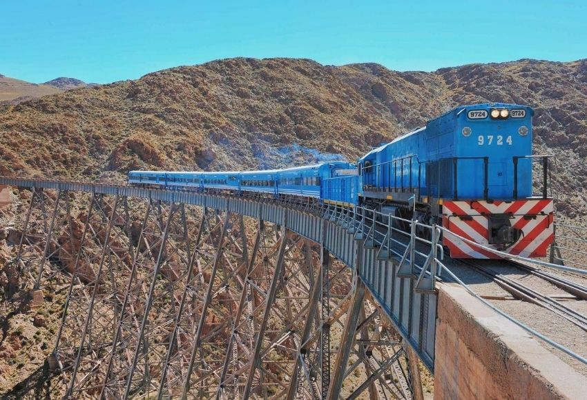

Salta, conocida como La Linda, es una provincia del noroeste argentino que combina paisajes montañosos, tradiciones culturales y una rica historia. Sus valles y quebradas ofrecen escenarios únicos donde la naturaleza se mezcla con la identidad de su gente, convirtiéndola en un destino turístico y cultural de gran relevancia.
